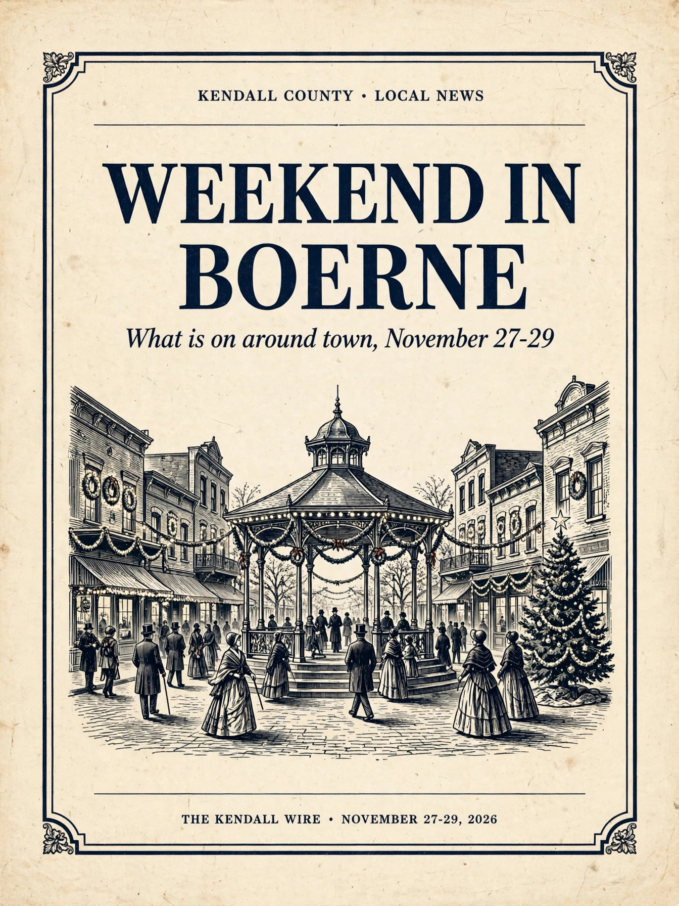

Community
This Weekend in Boerne and Kendall County: November 27-29
Here is what is on around Boerne and Kendall County from Friday, November 27 to Sunday, November 29.
Friday, November 27
- Dickens on Main (12:00 PM - 9:00 PM, Hill Country Mile, downtown Boerne). Boerne's Hill Country Mile transforms into a vintage Christmas experience, with entertainment among holiday villages set up throughout the venue. Santa visits run 3:00 PM to 8:00 PM in front of the Kendall County Courthouse, 201 E San Antonio Ave, per the City of Boerne News Flash Santa guide.
- Black Friday Event at Finishing Touches.
- Hill Country Rib Night (5:00 PM - 9:00 PM CST).
- LIVE MUSIC: Hip Tones at Indulge Wine Bar.
- Singer/Songwriter Live Music on the Patio @ Tapatio Springs.
- Old West Christmas Light Fest (5:00 PM - 10:00 PM, Enchanted Springs Ranch, 242 Highway 46 W). Christmas light displays, food trucks, face painting and a petting zoo, per the City of Boerne News Flash Santa guide.
- Jones Christmas Ranch drive-through lights (6:00 PM - 11:00 PM, 43360 I-10 West Frontage Road). Drive-through hours run to 11:00 PM on Fridays and Saturdays, per the City of Boerne News Flash Santa guide. The indoor market is open 6:00 PM to 10:00 PM.
Saturday, November 28
- Dickens on Main (12:00 PM - 9:00 PM, Hill Country Mile, downtown Boerne). Santa visits run 3:00 PM to 8:00 PM in front of the Kendall County Courthouse, 201 E San Antonio Ave, per the City of Boerne News Flash Santa guide.
- Blacksmithing For Beginners. Step back in time at the AgriCultural Museum & Arts Center. From 10:30 a.m. to 2:30 p.m., this class offers hands-on experience, helping you connect with the skills that supported our communities. Tickets are $125. Details: 210-445-1080.
- Breakfast with Santa (8:30 AM - 1:00 PM CST). Families are invited to enjoy a festive morning filled with holiday cheer, a delicious breakfast, photos with Santa Claus, Christmas crafts, cookie decorating and more. Event runs 8:30-10:30 a.m. at Tapatio Springs Hill Country Resort, 1 Resort Way. Reservations required; adults $35, kids $17.
- Cibolo Farmers Market at Herff Farm (9:00 AM - 1:00 PM CST, HERFF FARM).
- Fill the Tank Car Show hosted by White Knight Pest Control (12:00 PM - 3:00 PM CST, 4949 N. Loop 1604 W.).
- Hill Country Rib Night (5:00 PM - 9:00 PM CST).
- Honey Creek Guided Walk - at Guadalupe River State Park (9:00 AM - 11:30 AM CST).
- Kuhlmann-King Historical Complex Free Tours (12:00 PM - 3:00 PM CST, Kuhlmann-King Historical Complex).
- Live Music with Stan Wayne at Twelve to Twelve Boerne (8:30 PM - 11:55 PM CST, Twelve to Twelve Boerne).
- Singer/Songwriter Live Music on the Patio @ Tapatio Springs.
- Old West Christmas Light Fest (5:00 PM - 10:00 PM, Enchanted Springs Ranch, 242 Highway 46 W).
- Jones Christmas Ranch drive-through lights (6:00 PM - 11:00 PM, 43360 I-10 West Frontage Road). The indoor market is open 6:00 PM to 10:00 PM.
Sunday, November 29
- Honey Creek Guided Walk - at Guadalupe River State Park (9:00 AM - 11:30 AM CST).
- Old West Christmas Light Fest (5:00 PM - 10:00 PM, Enchanted Springs Ranch, 242 Highway 46 W).
- Jones Christmas Ranch drive-through lights (6:00 PM - 10:00 PM, 43360 I-10 West Frontage Road). The indoor market is open 6:00 PM to 9:00 PM.
- Lighting of the Trees at nineteen:ten church (5:30 PM - 7:30 PM, 130 Sisterdale Rd). Santa photos, a gingerbread house competition and a chili cook-off, per the City of Boerne News Flash Santa guide.
Friday night is also football night: check The Kendall Wire's Friday Night Finals roundup for Boerne High and Champion High scores.
Sources
- Greater Boerne Chamber of Commerce, Events Calendar: https://business.boerne.org/events
- Boerne Star, Calendar of Events: https://www.boernestar.com/article/14668,calendar-of-events
- City of Boerne News Flash, Where to See Santa in Boerne this Holiday Season, November 24, 2026: https://www.ci.boerne.tx.us/m/newsflash?cat=12,16
- The Boerne Life, Christmas Lights in Boerne: https://theboernelife.com/christmas-lights-in-boerne/